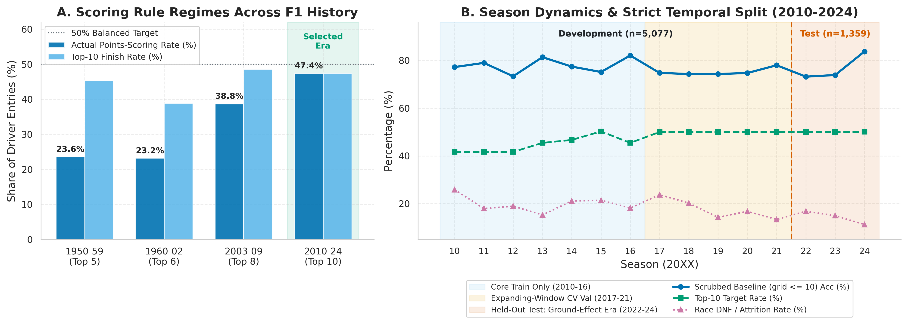
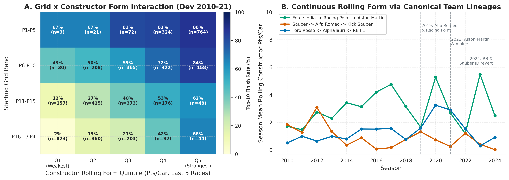
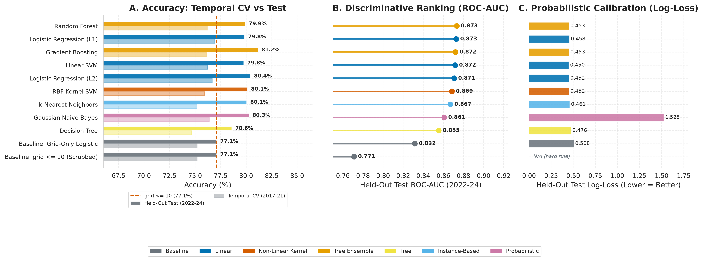
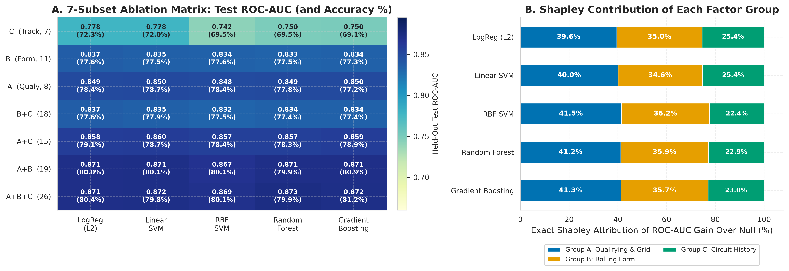
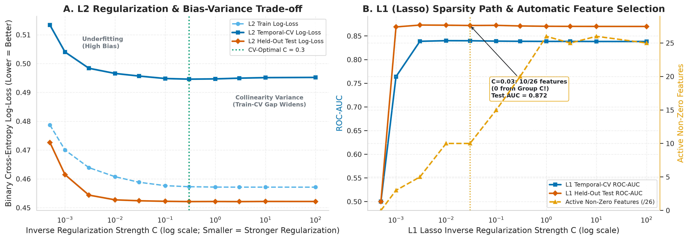
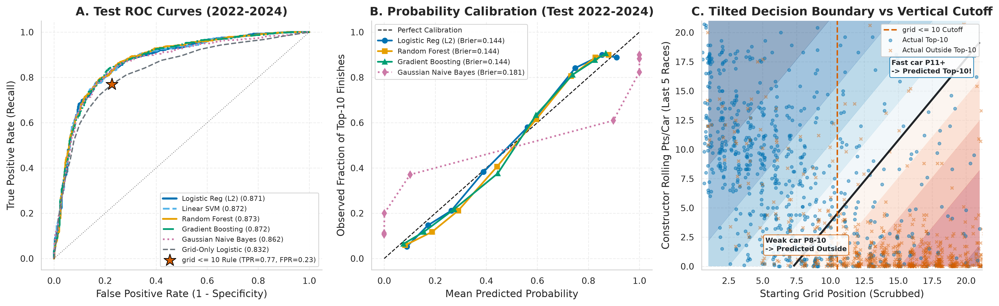
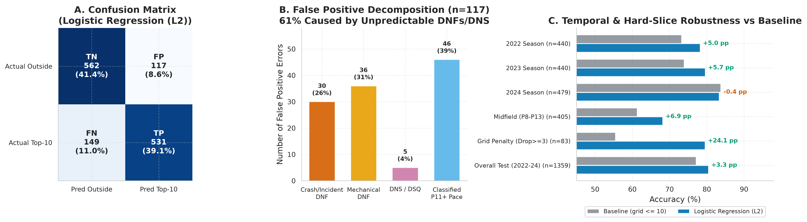
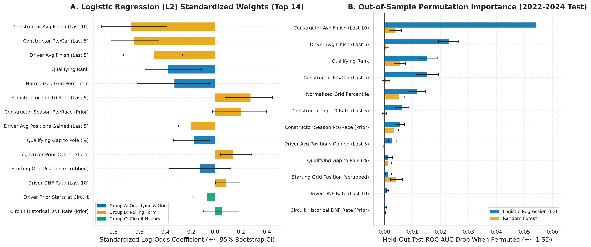

A strictly temporal, zero-leakage ablation of Qualifying Context, Rolling Constructor Momentum, and Historical Circuit Affinity across 9 curriculum ML models.

Row-wise .shift(1) leaks Car #1's finish into Car #2 in the same GP. All constructor & circuit features aggregate to (entity, raceId) first, then shift strictly by 1 race.





| Verdict | Grand Prix | Driver (Constructor) | Grid / Qualy | Finish | L2 Prob | grid ≤ 10 | Why ML Got It Right |
|---|---|---|---|---|---|---|---|
| Overturn Win | 2024 Belgian GP | M. Verstappen (Red Bull) | P11 / Q1 | P4 | 86.9% | Wrong | 10-place engine penalty; Q1 pace + Red Bull form |
| Overturn Win | 2022 Belgian GP | M. Verstappen (Red Bull) | P14 / Q1 | P1 (Win) | 82.1% | Wrong | Engine penalty drop; dominant 13.9 pts/car form |
| Overturn Win | 2022 United States GP | C. Leclerc (Ferrari) | P12 / Q2 | P3 | 81.8% | Wrong | Engine penalty drop; Q2 pace + 12.0 pts/car form |
| Overturn Win | 2024 Emilia Romagna GP | S. Pérez (Red Bull) | P11 / Q11 | P8 | 80.4% | Wrong | Missed Q3, but 16.6 pts/car team pace recovers |
| Overturn Win | 2022 Italian GP | N. Latifi (Williams) | P10 / Q16 | P15 | 13.5% | Wrong | Artificially promoted to P10 by others' penalties |
| Overturn Win | 2023 Dutch GP | L. Sargeant (Williams) | P10 / Q10 | P20 | 15.8% | Wrong | Wet Q3 fluke; weak rolling team & rookie form |

